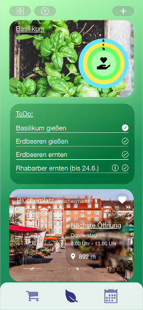

Plant Parenthood

Im Semesterprojekt des Moduls "Usability Engineering" begannen wir mit der Ideenfindung,
um die Herausforderungen der potenziellen Nutzer zu identifizieren und zu analysieren.
Kollaborative Brainstorming-Sessions führten zur Identifizierung zahlreicher Teilprobleme,
mit denen Nutzer regelmäßig konfrontiert sind. Der Prozess der Verfeinerung und Entwicklung
individueller Ideen im Team erwies sich als äußerst nützlich und förderte die Entstehung
einzigartiger Kombinationen und umfassender Lösungen. Ein herausragendes Ergebnis dieser
Ideenfindung war das Konzept eines digitalen Erntekalenders. Diese innovative Idee zielte
darauf ab, den Nutzern ein Tool zur Verfügung zu stellen, das nicht nur Informationen über
Pflanzen protokolliert, sondern sie auch benachrichtigt, wenn die Ernte fällig ist,
Lagermethoden empfiehlt und sogar Rezepte basierend auf den geernteten Produkten vorschlägt.
Mehrere Prototypen wurden entwickelt und getestet, um unsere Ideen zu verfeinern. Der erste
Prototyp konzentrierte sich auf die Pflanzenidentifikation durch Bilderkennung oder vom
Benutzer bereitgestellte Informationen. Der zweite Prototyp beinhaltete ein vom Benutzer
verwaltetes Pflanzenregister mit Erinnerungen für Pflegeaktivitäten. Der dritte Prototyp,
der positive Rückmeldungen erhielt, war eine App, die als Erntekalender fungiert, Benutzer
durch die Pflanzenpflege führt und sie über saisonale Früchte und Gemüse informiert. Während
die ersten beiden Prototypen Zustimmung erhielten, veranlassten bereits existierende
Marktlösungen uns dazu, innovativere Wege zu erkunden.
Der Wireframe-Prototyp, erstellt mit Adobe XD, stellt den Höhepunkt unseres
Ideenfindungsprozesses dar. Dieser interaktive Prototyp dient als visueller Leitfaden für
das Endprodukt und integriert Benutzerfeedback aus verschiedenen Testphasen. Der Wireframe-
Prototyp kann in seiner Gesamtheit hier
eingesehen werden.
Das Projekt schloss mit einer umfassenden Analyse des finalen Prototyps ab. Während die
Benutzeroberfläche Erfolg bei der Anleitung der Benutzer durch die Pflanzenpflege zeigte und
positive Rückmeldungen erhielt, wurden Verbesserungsbereiche identifiziert. Benutzer äußerten
Schwierigkeiten bei der Erkennung bestimmter Funktionen und betonten die Notwendigkeit klarerer
visueller Hinweise. Die iterative Testphase war entscheidend, um den Prototypen zu verfeinern
und subtile Usability-Probleme aufzudecken, die die Benutzererfahrung beeinträchtigen könnten.
Das Feedback unterstrich den Erfolg des Kernziels der Benutzeroberfläche, die Pflege der
Pflanzen zu unterstützen. Es zeigte jedoch die Notwendigkeit weiterer Verbesserungen auf,
darunter die Einbettung erläuternder Grafiken, die Behebung von Farbkontrastproblemen für
farbenblinde Benutzer und die Verbesserung der Klarheit bestimmter Funktionen.
Witere Informationen sind in den Iterationsberichten des Moduls zu finden.